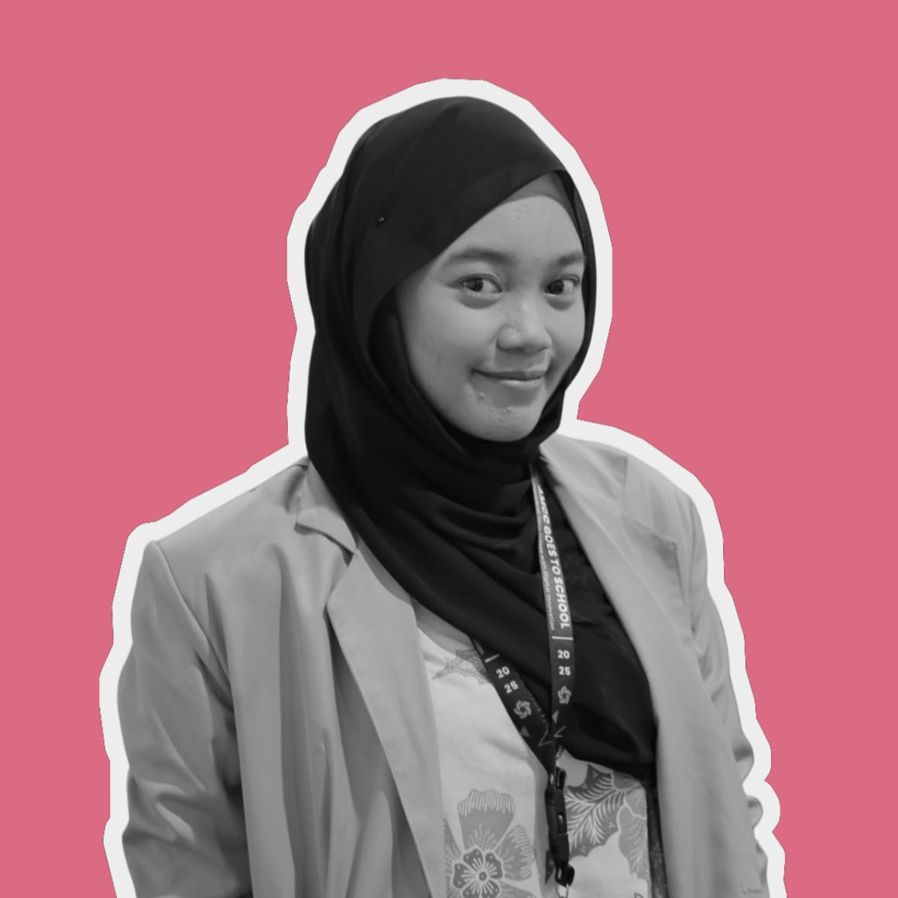

Hello, I'm Wasima Juhaina
Information Systems student at Amikom Yogyakarta University with a passion for web development, machine learning, and UI/UX design. I believe design isn't just about aesthetics—it's about feeling and storytelling.Education Journey
Universitas Amikom Yogyakarta
Information Systems
PresentSMA Negeri 1 Amuntai
IPA
2021-2024Expertise
Full Stack Development |
Machine Learning |
UI/UX Design |
Featured Video
Project Gallery